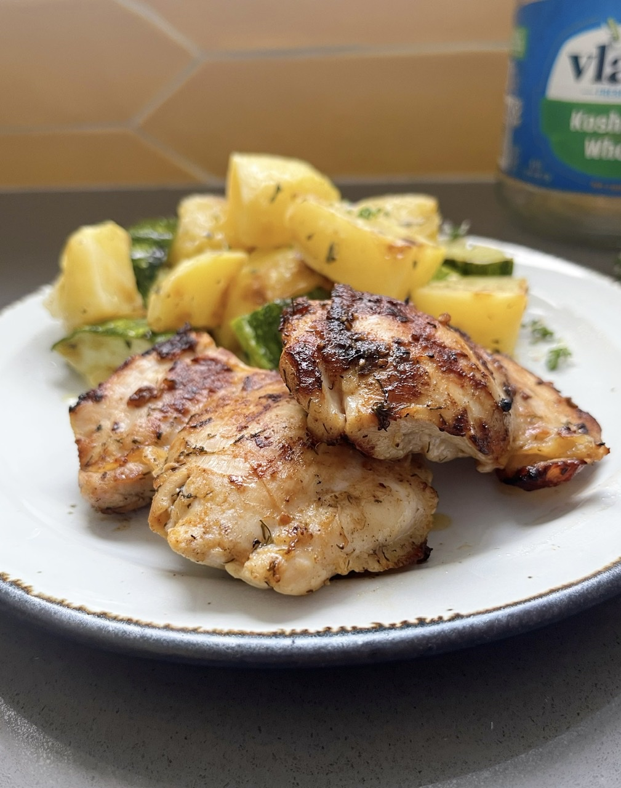

Grilled Dill Pickle Chicken Thighs

Ingredients
- 4 each skinless chicken thighs
- 1 ½ cups dill pickle juice
- 1 tablespoon olive oil
- ½ teaspoon seasoned salt
- ½ teaspoon paprika
- ½ teaspoon freeze-dried dill
- ¼ teaspoon ground black pepper
Cooking Instructions
Step 1
- Place chicken thighs in a gallon-sized resealable bag. Pour pickle juice over the chicken. Seal bag and refrigerate for 4 hours.
Step 2
- Preheat an outdoor grill for medium-high heat and lightly oil the grate.
Step 3
- Whisk olive oil, seasoned salt, paprika, dill, and pepper together. Remove chicken from pickle juice; discard the juice. Brush all sides of the chicken with the seasoned oil.
Step 4
- Grill chicken for 6 minutes. Flip and grill until no longer pink in the center, about 6 minutes more.